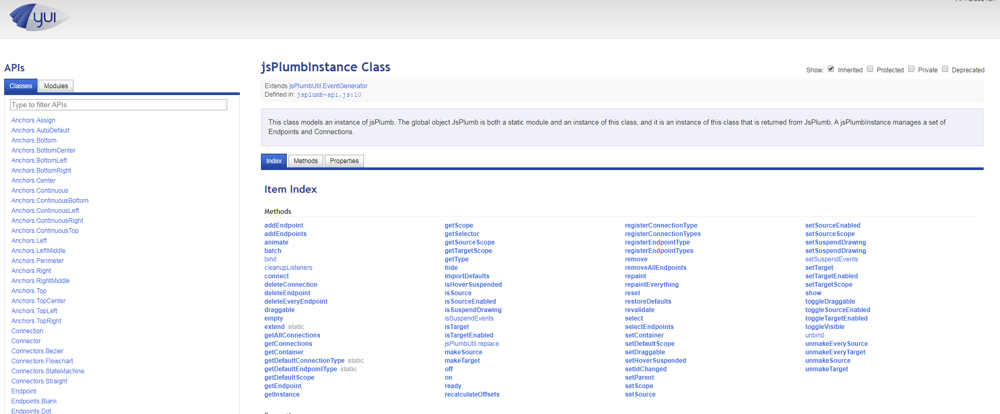

示例代码托管在：http://www.github.com/dashnowords/blogs
博客园地址：《大史住在大前端》原创博文目录
华为云社区地址：【你要的前端打怪升级指南】
最近向一些同事推荐了网页中实现流程图绘制的工具库jsplumb.js，Community版本是开源的，在github的官方仓库的Wiki中能够找到社区版的官方指南，非常非常详细。但是在后来很多人反馈说找不到API文档，github官方仓库中的API文档链接失效了，jsplumb.js官网也找不到。
其实API文档就放在官方代码仓中，只是需要一些小小的加工，具体步骤如下：
1.先从官方代码仓https://github.com/jsplumb/jsplumb 将master分支的工程拉取到本地
2.使用npm install yuidocjs -g 或yarn global add yuidocjs全局安装文档工具YUIdoc
3.进入刚才下载的工程目录中的/doc/api文件夹
4.打开cmd小黑窗，输入yuidoc .（yuidoc后面是1个空格1个点号）
YUIdoc就会在当前目录新建一个out文件夹，并将文档输出为本地静态网站，完成后只需要打开out目录中的index.html就可以本地查看API离线文档了，下图即是YUIdoc默认样式生成的离线文档：

怎么样，这个技能你Get到了吗？
YUIdoc是一个基于模板引擎Handlebars.js 的自动化文档工具，可以将javascript中jsdoc风格的注释语句转换成静态网站式的离线文档，所以你可以通过定制模板来为最终生成的文档增加不同的主题样式。jsdoc风格通常都会有IDE插件直接生成（vscode和sublime里肯定是有的，因为我自己天天用），最常见的是函数声明注释，YUIdoc中可以识别的所有语法可以查看官方提供的【YUIdoc支持的注释语法】：
//jsdoc风格的注释
/**
* My method description. Like other pieces of your comment blocks,
* this can span multiple lines.
*
* @method methodName
* @param {String} foo Argument 1
* @param {Object} config A config object
* @param {String} config.name The name on the config object
* @param {Function} config.callback A callback function on the config object
* @param {Boolean} [extra=false] Do extra, optional work
* @return {Boolean} Returns true on success
*/你可以通过-e参数来指定注释文件的格式，例如你的工程是基于Typescript开发的，就可以使用yuidoc . -e .ts将项目中的*.d.ts声明文件转换成离线文档，以便团队内部查阅。如果你开发的是一个工具库，需要生成完备的API文档，为了不影响源码阅读和开发，可以像jsplumb.js那样将注释语句单独写在一个文件中，因为是一个自动化工具，也没什么太多可讲的，有需要的朋友直接浏览一下官网就可以很容易地使用了。